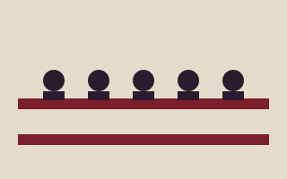
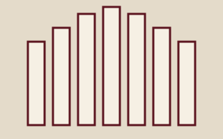

Today:
Cathedral of Saint Aurelian
A house of prayer for all people in the heart of Harrowmere: a place of worship, music, art and public conversation.
Visit and worship
Hours & Admission
- Monday to Saturday
- 9:00 am to 5:00 pm
- Sunday
- 1:00 pm to 5:00 pm
- Closed
- Dec 25 afternoon, Good Friday morning
- Adult
- $12
- Senior (65+) or student
- $10
- Child 12 and under
- Free
- Worshippers at a service
- Free
Sunday Services
- 8:00 am
- Early Eucharist, Lady Chapel
- 11:00 am
- Holy Eucharist with choir, Nave
Weekday services are listed on the services page. Visitors are welcome at worship.
Live at the Cathedral
The next four kinds of gathering on the demo calendar (sample data).
2026–2027 Events

Advent Procession
A candlelit procession with readings and choral music, December 6.

Talk: Light in Medieval Glass
An art historian reads the stained glass, January 23.

Easter Day Festal Eucharist
Brass, timpani and full choir, March 28.
Seeking more?
Livestreams and Recordings
Browse the sample archive of sermons, concerts and talks.
Support the Cathedral
Help care for a very old building and a very young choir.